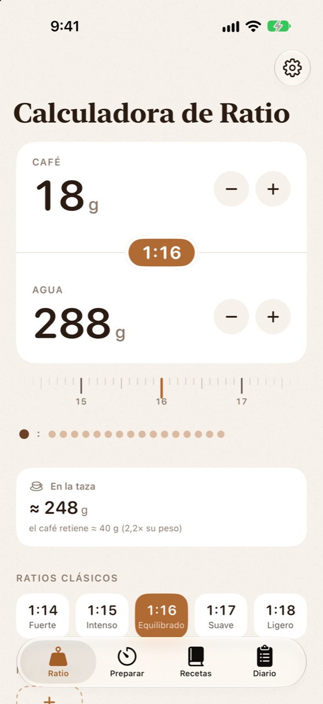
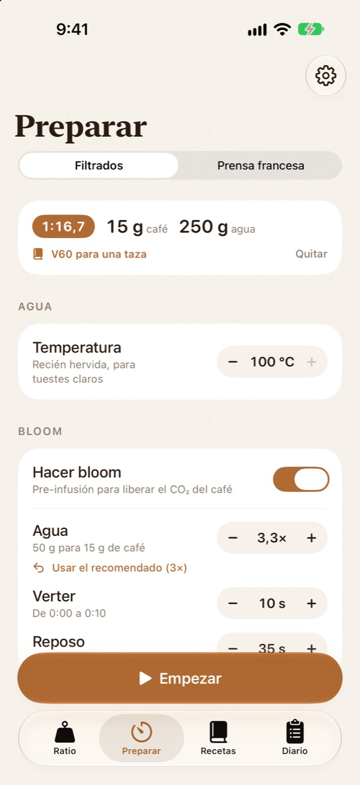
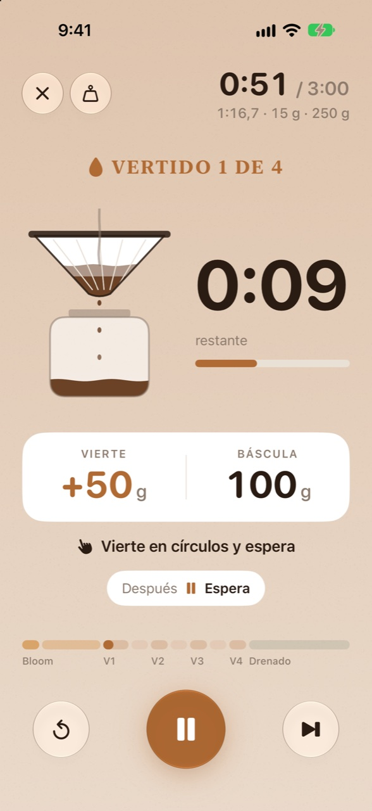
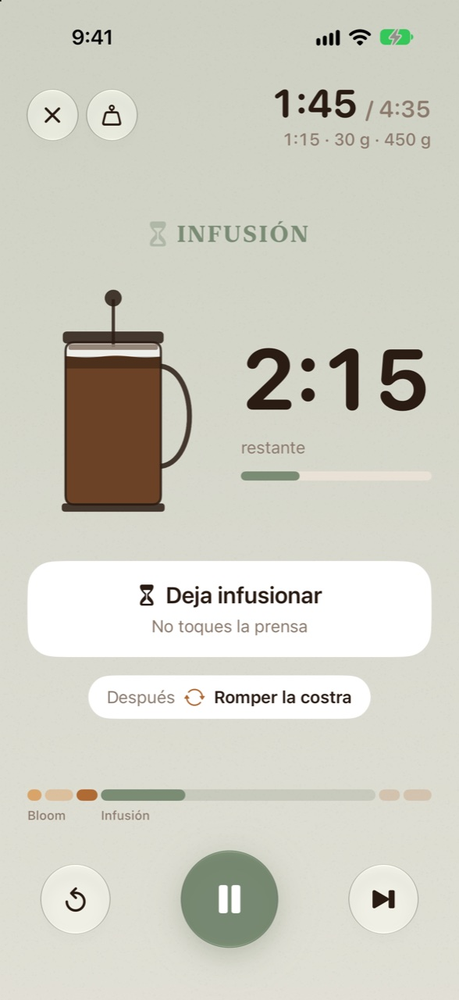
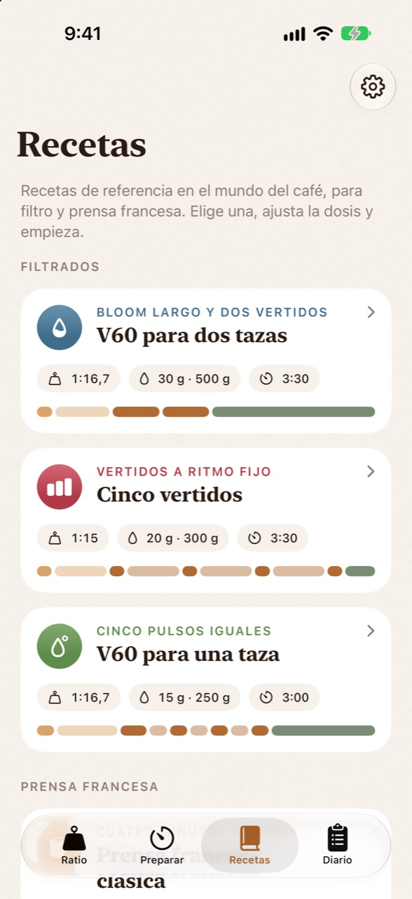
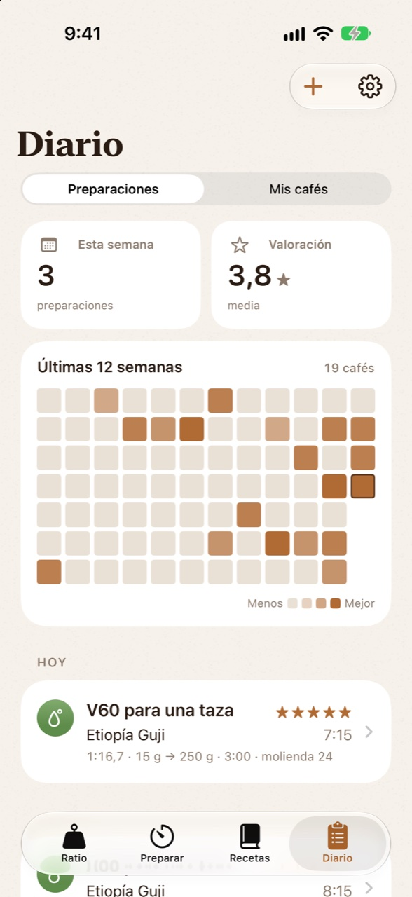
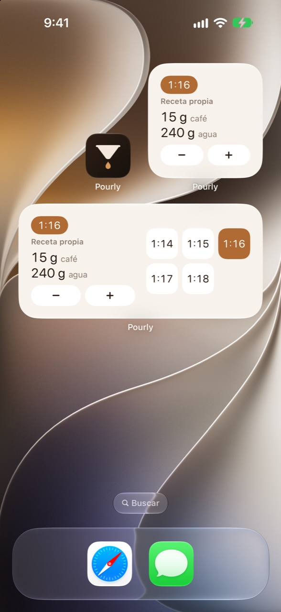

Pourly
Café de filtro y prensa francesa, bien hecho. Calcula el ratio, sigue cada paso con un temporizador visual y aprende de cada taza con tu diario.
Pour-over and French press, done right. Work out the ratio, follow every step with a visual timer and learn from every cup with your journal.






Todo lo que necesitas para una buena tazaEverything you need for a great cup
Pensada para usarse con la báscula delante y el hervidor en la mano.
Made to be used with the scale in front of you and the kettle in hand.
Calculadora de ratioRatio calculator
Escribe el café o el agua y el otro se calcula solo. Ratios clásicos, ratios propios y una rueda para afinar a la décima. Te dice también cuánto café acabará en la taza.
Type the coffee or the water and the other is worked out for you. Classic ratios, your own, and a dial to fine-tune to a tenth. It also tells you how much coffee ends up in the cup.
Filtrados y prensa francesaPour-over and French press
Para V60 y similares: bloom, vertidos con su tiempo y su espera, y drenado. Para prensa francesa: bloom, infusión, romper la costra, reposo y bajar el émbolo. Empiezas eligiendo la temperatura del agua.
For the V60 and similar: bloom, pours with their time and wait, and drawdown. For French press: bloom, steep, break the crust, rest and plunge. You start by choosing the water temperature.
Temporizador guiadoGuided timer
A pantalla completa, con un dripper o una prensa animados, lo que debe marcar la báscula en cada paso, un modo de números grandes para leer de lejos y un aviso antes de cada cambio de fase.
Full screen, with an animated dripper or French press, what the scale should read at every step, a big-numbers mode to read from afar and a heads-up before every phase change.
Recetas de referenciaBenchmark recipes
Técnicas muy conocidas en el mundo del café, paso a paso y escaladas a tu dosis: tres de V60 y dos de prensa francesa.
Well-known techniques from the coffee world, step by step and scaled to your dose: three for the V60 and two for the French press.
Diario y tus cafésJournal and your coffees
Valora cada taza, anota sabores y molienda, y repite tu mejor preparación con un toque. Sigue la frescura de cada paquete según su fecha de tueste.
Rate every cup, note flavors and grind, and repeat your best brew with one tap. Track how fresh each bag is from its roast date.
Widget, temas e idiomasWidget, themes and languages
Widget para inicio, pantalla de bloqueo y StandBy. Seis temas en claro y oscuro con iconos a juego. En español e inglés, con unidades en gramos, onzas o tazas.
A widget for the Home Screen, Lock Screen and StandBy. Six themes in light and dark with matching icons. In English and Spanish, with grams, ounces or cups.
Tu receta, siempre a manoYour recipe, always at hand
El widget muestra el ratio, el café y el agua de tu receta. Cambia la dosis con − y +, o elige otro ratio, sin abrir la app.
The widget shows the ratio, coffee and water of your recipe. Change the dose with − and +, or pick another ratio, without opening the app.
- Pantalla de inicio, en tamaño pequeño y medianoHome Screen, in small and medium sizes
- Pantalla de bloqueo y StandByLock Screen and StandBy
- Con los colores de tu tema, en claro y oscuroIn your theme's colors, light and dark

Sin cuentas. Sin anuncios. Sin internet.No accounts. No ads. No internet.
Pourly no recopila ningún dato y nunca se conecta a internet. Tus recetas, tu diario y tus cafés se quedan en tu iPhone.
Pourly collects no data and never connects to the internet. Your recipes, journal and coffees stay on your iPhone.
Leer la política de privacidad →Read the privacy policy →